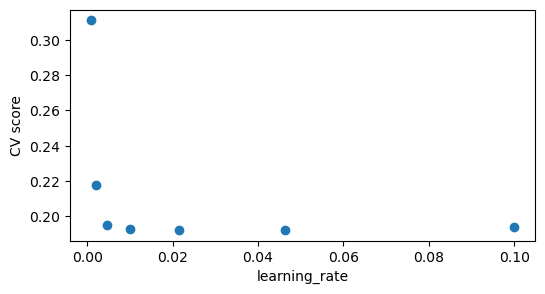
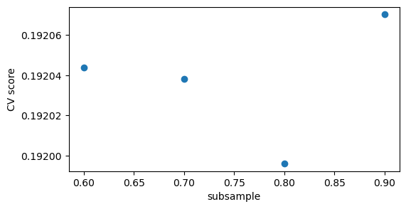

Like with previous aspects of the pipeline, there are no precise rules for picking the right model for a particular problem because the choice depends on a multitude of different factors. However, there are some rules of thumb (given that we are optimizing for the predictive power of our model):
For smaller datasets (with several hundred to several thousand observations), linear models (e.g., ridge regression, logistic regression) generally work best. Random Forests or Support Vector Machines are also worth a try. Note that Nvidia’s cuml library provides GPU acceleration for all these models.
For larger datasets (from several thousand to hundreds of millions of observations), GBDTs are the gold standard. Their rule-based approach is ideally suited for the typical irregular patterns of tabular data, and with a large enough dataset overfitting can be prevented. Also, GBDTs (especially XGBoost) nowadays profit heavily from GPU acceleration. If the data comes from physical processes or simulations, however, neural networks will often shine since they are biased towards smooth solutions. This also holds when interpolation is very important (e.g., because the samples are quite far from each other) because the piecewise constant functions learned by tree-based models are not suited for interpolation. Furthermore, neural networks are the way to go for representation learning. Finally, if we need the best possible predictive performance, deep learning usually works well as a complement to tree-based models in ensembles. Have a look at this recent paper for more on tree-based models and neural networks for tabular data.
For huge datasets (with, say, more than a billion observations), neural networks are typically the best choice.
GBDT libraries and their hyperparameters
For the sake of brevity, we’ll only dive deeper into GBDTs and their hyperparameters. We’ll look at the most common implementations: XGBoost, LightGBM, CatBoost, and scikit-learn’s HistGradientBoosting.
Note:
Knowing how GBDTs work is a prequisite for understanding their hyperparameters; see here for a thorough explanation.
The tips below come from my own experience (especially XGBoost and LightGBM) as well as from other people’s code and what I found online (CatBoost, HistGradientBoosting).
XGBoost
XGBoost was the first library that provided a highly optimized implementation of GBDTs. Nowadays, it is primarily developed by Nvidia leading to built-in GPU acceleration which massively speeds up model training.
Let’s have a look at the most important hyperparameters:
n_estimators: This is the number of trees fitted (which is equal to the number of boosting iterations). Generally a higher number of trees improves the model’s performance (at least up to some point), but also increases the risk of overfitting. In general, around 1,000 trees should be enough; using many more is not needed in most problem settings (5,000 should definitely be enough). Important: n_estimators has to be tuned in conjunction with the learning_rate. Thus, a good approach can be to set n_estimators=1000 and try out different learning rates (or do a grid search) before proceeding with tuning other hyperparameters. After finding a good hyperparameter setting, we can still tune both the number of trees and the learning rate. (Note that this can be done the other way around, too. That is, we can set the learning rate so that around 1,000 trees are used, and continue from there.)
learning_rate: A learning rate between 0.001 and 0.1 should work fine. Generally, a lower learning rate should be combined with a higher number of trees.
max_depth: Apart from n_estimators and learning_rate, max_depth is probably the most important hyperparameter. It determines the maximum depth of the trees; with a higher max_depth the model becomes more complex but also more likely to overfit. When tuning by hand, this is the first hyperparameter (after the number of trees/learning rate) that should be tuned. It is also the first parameter to decrease if overfitting is a problem. In general, a value between 3 and 10 should be fine. Depending on the problem, it can make sense to go a bit higher. Note that a higher max_depth results in slower computation and higher memory usage.
min_child_weight: Technically, min_child_weight is the minimum sum of instance weight needed in a child. In lay terms it regularizes the model by limiting the depth of the trees. Generally, a higher min_child_weight means a more conservative model. A good range for tuning is between 1 (the default value) and 300.
colsample_bytree: This is the subsample ratio of columns when constructing each tree. Subsampling columns when constructing each tree can make the training faster and more robust to noise. Typically, the best value is between 0.5 and 0.9 (or even 0.3 and 1.0).
subsample: This is the subsample ratio of the training instances (subsampling occurs once in every boosting iteration). Like colsample_bytree, using subsample helps prevent overfitting by introducing randomness in the training process. Typically, the best value is between 0.5 and 0.8 (or even 0.4 and 1.0). 0.7 is often a good starting point. Making use of colsample_bytree and subsample leads to more different tree splits.
reg_alpha, reg_lambda: While alpha represents the L1 regularization term on weights, lambda is the L2 regularization term. Increasing these hyperparameters translates to making the model more conservative. There are two things to note: First, adding regularization is not always better. Second, for GBDTs it tends to be better to set alpha to (near) zero, while using a higher lambda. A good range for tuning is between 0.001 and 10.0.
max_bin: The maximum number of bins to bucket numerical features. The default is 256. Can be increased to build a more complex model, but comes with a higher risk of overfitting and slows down training.
gamma: gamma represents the minimum loss reduction required to make a further partition on a leaf node of the tree. That is, gamma controls the complexity of the model and can be increased to combat overfitting. Since a good value for gamma is highly dependent on the data set and the other hyperparameters, it is difficult to give a good range for tuning. As per this post, it can help to increase gamma (the default is 0; try 3, 5, or 10, for example) if overfitting appears to be a huge problem. Values around 20 should only be used when the model uses a high max_depth.
Apart from n_estimators and learning_rate, it is typically enough to tune max_depth, min_child_weight, colsample_bytree, subsample, and reg_alpha/reg_lambda.
Notes:
The XGBoost library provides two APIs: its original “Learning API” and a scikit-learn wrapper interface, the “Scikit-Learn API”. Furthermore, XGBoost uses the custom data structure DMatrix to improve training speed and memory efficiency. For improved memory efficiency when training on the GPU the XGBoost library also provides the DeviceQuantileDMatrix.
Set objective to define the objective function and eval_metric for the evaluation metric. XGBoost provides many options for regression, classification, and ranking tasks. See here for defining custom objectives or evaluation metrics.
Specify the tree_method as gpu_hist to use GPU acceleration. XGBoost supports fully distributed GPU training using Dask.
Specify the predictor parameter to cpu_predictor to predict on the CPU or to gpu_predictor for using GPU accelerated prediction. Use gpu_predictor to compute SHAP values using GPU acceleration.
When there are unbalanced classes, use scale_pos_weight to control the balance of positive and negative weights. A typical value is sum(negative instances) / sum(positive instances). See here for more tips and here for an example.
Depending on the problem, we may know that a given feature should generally have a positive or negative effect on the target (e.g., due to business constraints or scientific knowledge) or we may want to restrict the interaction of different features. XGBoost provides tutorials on using monotonic constraints and feature interaction constraints.
LightGBM, developed by Microsoft, is an alternative to XGBoost. While XGBoost uses a level-wise strategy to grow trees (i.e., breadth-first search), LightGBM uses a leaf-wise growth strategy (i.e., depth-first search). This generally allows LightGBM to fit more quickly than XGBoost (at least when compared on CPUs).
n_estimators: In LightGBM the optimal range for the number of trees appears to be somewhat wider than in XGBoost. Try values between 100 and 10,000. Increase the learning_rate when you decrease n_estimators. Note that choosing the right values for the number of trees and the learning rate is highly dependent on the data and the objective.
learning_rate: Try values between 0.001 and 0.1. Use a small learning rate combined with a higher number of iterations to improve the accuracy of the model. Decrease the learning rate to combat overfitting.
max_depth: Try values between 3 and 20.
num_leaves: The maximum number of final leaves for each tree and the main parameter to control the complexity of a LightGBM model. Can be between 2 and \(2^{\text{max depth}}\).
min_data_in_leaf: The minimum number of data points in one leaf. Very important parameter to prevent overfitting in a leaf-wise tree (like LightGBM). Its optimal value depends on the number of training samples and num_leaves. Setting it to a large value can avoid growing too deep trees, but may cause underfitting. In practice, setting it to hundreds or thousands is enough for a large dataset.
max_bin: The maximum of bins that each feature will be bucketed into. The default is 255. Increasing max_bin up to, say, 400 allows more complexity but also increases the risk of overfitting. Decreasing max_bin can be used to speed up training.
colsample_bytree: Try values between 0.3 and 1.0.
subsample: Try values between 0.1 and 1.0.
subsample_freq: The frequency (in terms of boosting iterations) at which LightGBM will subsample the training examples. If subsampling helps, try values between 1 and 10.
reg_alpha, reg_lambda: These are the same as in XGBoost.
min_gain_to_split: Increase min_gain_to_split to combat overfitting. From the LightGBM docs: “When adding a new tree node, LightGBM chooses the split point that has the largest gain. Gain is basically the reduction in training loss that results from adding a split point. By default, LightGBM sets min_gain_to_split to 0.0, which means ‘there is no improvement that is too small’. However, in practice you might find that very small improvements in the training loss don’t have a meaningful impact on the generalization error of the model.”
Apart from n_estimators and learning_rate, it is typically enough to tune num_leaves, min_data_in_leaf, colsample_bytree, subsample, and reg_alpha/reg_lambda.
Notes:
LightGBM provides two main APIs: the original “Training API” and a scikit-learn wrapper interface, the “Scikit-Learn API”.
It is possible to train LightGBM using GPUs. XGBoost, however, generally provides (much) better GPU acceleration.
Set objective to define the objective function. See here for the many options provided by LightGBM.
Use categorical_feature to specify categorical features.
In binary classification, use is_unbalance or scale_pos_weight to handle class imbalances. In multi-class classification tasks, use class_weight. Per the LightGBM docs, note that it may be necessary to calibrate the resulting class probabilities.
CatBoost was originally developed by Yandex. As hinted by its name, CatBoost generally shines in datasets with many categorical features (CatBoost cleverly uses one-hot encoding and target encoding for this purpose). It can work really well with all kinds of datasets, however.
The eight most important hyperparameters:
n_estimators: Try values between 100 and 1,000. CatBoost’s default is 1,000 trees; again, using many more typically isn’t necessary.
learning_rate: Try values between 0.001 and 0.1. Use a small learning rate combined with a higher number of iterations to improve the accuracy of the model. Decrease the learning rate to combat overfitting.
max_depth: Per the CatBoost docs, the optimal depth ranges from 4 to 10 and values from 6 to 10 are recommended. CatBoost doesn’t support values higher than 16.
subsample: Try values between 0.1 and 1.0.
bagging_temperature: Defines the settings of the Bayesian bootstrap which is used to assign random weights to objects. The default is 1.0. A higher value translates to more aggressive bagging. If set to 0.0, all weights are equal to 1.
random_strength: Per the CatBoost docs, this parameter is used when selecting splits: “On every iteration each possible split gets a score (for example, the score indicates how much adding this split will improve the loss function for the training dataset). The split with the highest score is selected. The scores have no randomness. A normally distributed random variable is added to the score of the feature. It has a zero mean and a variance that decreases during the training. The value of this parameter is the multiplier of the variance.” The default value is 1.0. Try values between 1e-9 and 10.0.
border_count: The number of splits for numerical features. 128 should usually be enough. Set border_count to the default of 254 when training on the GPU to get the best possible performance. Larger values are generally not recommended and slow down training.
reg_lambda: Try values between 2 and 30.
Apart from n_estimators and learning_rate, it is typically enough to tune max_depth, subsample, reg_lambda, random_strength, and bagging_temperature.
max_iter: This is the maximum number of trees fitted (i.e., equivalent to n_estimators in other libraries). The default value is 100. Try values between 100 and 10,000.
learning_rate: Try values between 0.001 and 0.1.
max_depth: Try values between 3 and 12 (the ideal value is often around 6). Note that the depth isn’t constrained by default.
max_leaf_nodes: The maximum number of leaves for each tree. The default is 31. Depending on the dataset, try values in a larger range (e.g., between 2 and 500).
min_samples_leaf: The minimum number of samples per leaf. The default is 20. Depending on the dataset, try values between 2 and 300.
max_bins: The default is 255 (one more bin is always reserved for missing values). Using less bins can help prevent overfitting, but isn’t generally recommended by scikit-learn.
l2_regularization: Comparable to reg_lambda in other libraries. The default is 0. Try values up to 100.
Notes:
Use the loss parameter to set the loss function.
Scikit-learn provides an example for using monotonic constraints (set the monotonic_cst parameter). Setting interaction constraints is possible too (set the interaction_cst parameter).
Use the categorical_features parameter to indicate categorical features.
By default, early stopping is performed if there are at least 10,000 samples. We can control this behavior using the early_stopping parameter.
Hyperparameter Optimization
Finding the right set of hyperparameters for a given problem can be very challenging. The automatic hyperparameter optimization methods that are briefly outlined below can generally be applied to any problems or models, not just tabular ones. Note: Before we can optimize hyperparameters, we of course need a model, a hyperparameter search space (i.e., a range of values for each hyperparameter), and a reliable CV scheme with an evaluation metric that we care about.
Grid search: Grid search translates to searching exhaustively through all possible hyperparameter combinations. The algorithm is highly parallelizable, but naturally suffers from the curse of dimensionality and is therefore not feasible in a high-dimensional search space. We can use it in the rare cases that don’t require a lot of tuning, though. Grid search is implemented by scikit-learn’s GridSearchCV.
Random search: Instead of trying every combinations, random search randomly samples the search space. Since this is generally feasible in high-dimensional spaces, doesn’t waste time with testing slightly different combinations, and still has a good chance of finding a good set of hyperparameters, random search is quite common in practice. It is implemented in scikit-learn’s RandomizedSearchCV.
Halving search: Both grid search and random search cannot recognize ineffective hyperparameters or search intervals. To remedy this, scikit-learn also provides hyperparameter optimization based on successive halving (SH). In the first iteration, the SH algorithm evaluates all parameter combinations with a small amount of resources (often the number of training samples). Then, it selects only the best candidates for the next iteration which in turn uses more resources for evaluation. This process continues in the following iterations (i.e., only a subset of candidates proceeds to the next round and the corresponding performance estimates get more precise since more resources are allocated for evaluation). Scikit-learn implements the SH algorithm in HalvingGridSearchCV and HalvingRandomSearchCV.
Bayesian optimization: Bayesian optimization (BO) is a more sophisticated approach. Unlike grid search or random search, BO optimizes a surrogate function instead of the true objective function (because the true objective function may be expensive to evaluate, noisy, and evaluation doen’t give gradient information). In the beginning BO focuses on exploration to train the surrogate function, and then starts to exploit its approximate knowledge of the objective to sample more useful examples (i.e., hyperparameter combinations). For smooth search spaces, BO is typically based on Gaussian processes (with scikit-optimize being the most prominent example). An alternative for more complex search spaces are Tree Parzen Estimators (TPEs) which sample parameter combinations from a multivariate probability distribution. TPE is the default sampler used by Optuna, a widely used tool for hyperparameter optimization. See here for a nice and more in-depth explanation of Bayesian optimization.
Finally, some general tips for GBDT hyperparameter tuning:
Focus on key hyperparameters. It isn’t necessary to tune all available hyperparameters; instead focus on key hyperparameters that can be tuned intuitively.
Stay conservative. Using huge search spaces for finding the best possible hyperparameter configuration usually results in overfitting to the validation data. Thus, blindly trusting the result of an Optuna study is generally not a good idea (we need to at least check the best trials for consistency).
Don’t tune the hyperparameters too often. After the hyperparameters of a model have been tuned, the results cannot be reliably compared to older runs. Tune the hyperparameters of the model when the feature engineering is complete (and maybe once when a useful basic set of features has been created).
Don’t use early stopping. Instead of using a different number of trees for each fold (inevitably leading to overfitting), select the number of trees that works best across folds. We generally wouldn’t use different hyperparameters for our folds; this applies to the number of trees too. Also, using early stopping complicates retraining on the full dataset.
With some experience, tuning GBDTs manually can be a quite intuitive method for hyperparameter optimization (and get better results in less trials than Optuna). An example for XGBoost: Set n_estimators=1000 and choose an adequate learning rate. Then, try some reasonable values for max_depth and plot the corresponding CV scores (we should be able to see whether we need to try more values). Proceed like this with min_child_weight, colsample_bytree, subsample, and reg_alpha/reg_lambda. This way, we’ll gather a better understanding of the role of each hyperparameter. In the end, see whether changes to the number of trees and/or the learning rate can lead to further improvements.
Example: Rocket League
We’re ready to finalize our Rocket League example. Let’s tune the hyperparameters of the XGBoost model developed in the last post and see whether we can improve our CV score even further.
Code
import pandas as pdimport cudfimport cupyimport numpy as npimport xgboost as xgbimport matplotlib.pyplot as pltfrom sklearn.model_selection import GroupKFoldfrom sklearn.metrics import log_lossfrom pathlib import Pathimport reimport gc
Code
data_path = Path("/kaggle/input/rocket-league-ds")train_df = cudf.read_feather(data_path/"train_fe.feather")test_df = cudf.read_feather(data_path/"test_fe.feather")target ="team_A_scoring_within_10sec"features = [col for col in train_df if col != target]
The optimize function, which we’ll use for tuning the hyperparameters by hand, is pretty simple. It takes the name of a parameter and the corresponding search space, and it outputs the CV score for each parameter value as well as a plot showing all experiments.
Let’s see how this works in practice. Having set the number of trees (num_boost_round) to 1000, we begin by trying different values for the learning rate. Plotting the results helps us determine the optimal value for this parameter.
Run 0 with learning_rate=0.0010 finished with score: 0.31120
Run 1 with learning_rate=0.0022 finished with score: 0.21784
Run 2 with learning_rate=0.0046 finished with score: 0.19517
Run 3 with learning_rate=0.0100 finished with score: 0.19302
Run 4 with learning_rate=0.0215 finished with score: 0.19224
Run 5 with learning_rate=0.0464 finished with score: 0.19221
Run 6 with learning_rate=0.1000 finished with score: 0.19370
Best run: learning_rate=0.046415888336127774 with score 0.19221204071717607

We set the parameter to 0.045 and from now on treat it as fixed:
Code
xgb_params["learning_rate"] =0.045
Now we proceed in the same way with the other hyperparameters that we want to tune.
Note: This may seem like a bad approach due to the complex dependencies between different hyperparameters which are often said to require an extensive grid search for tuning. In my experience though, manual tuning is an intuitive and, even more importantly, competitive approach to hyperparameter optimization that doesn’t end in bad surprises (that is, bad test scores) and improves our understanding of key hyperparameters along the way.
Code
optimize(train_df, "max_depth", range(3, 9))
Run 0 with max_depth=3.0000 finished with score: 0.19328
Run 1 with max_depth=4.0000 finished with score: 0.19248
Run 2 with max_depth=5.0000 finished with score: 0.19219
Run 3 with max_depth=6.0000 finished with score: 0.19224
Run 4 with max_depth=7.0000 finished with score: 0.19251
Run 5 with max_depth=8.0000 finished with score: 0.19311
Best run: max_depth=5 with score 0.19218715537697664
Run 0 with colsample_bytree=0.3000 finished with score: 0.19274
Run 1 with colsample_bytree=0.4000 finished with score: 0.19251
Run 2 with colsample_bytree=0.5000 finished with score: 0.19239
Run 3 with colsample_bytree=0.6000 finished with score: 0.19228
Run 4 with colsample_bytree=0.7000 finished with score: 0.19222
Run 5 with colsample_bytree=0.8000 finished with score: 0.19221
Run 6 with colsample_bytree=0.9000 finished with score: 0.19216
Run 7 with colsample_bytree=1.0000 finished with score: 0.19217
Best run: colsample_bytree=0.9000000000000001 with score 0.19216419980671837
Run 0 with subsample=0.6000 finished with score: 0.19204
Run 1 with subsample=0.7000 finished with score: 0.19204
Run 2 with subsample=0.8000 finished with score: 0.19200
Run 3 with subsample=0.9000 finished with score: 0.19207
Best run: subsample=0.7999999999999999 with score 0.191996017796013

Code
xgb_params["subsample"] =0.8
We have now determined our final values for the learning_rate, max_depth, colsample_bytree, and subsample hyperparameters.
Let’s compute the test score:
Code
model = xgb.train(xgb_params, dtrain=xgb.DMatrix(data=train_df[features], label=train_df[target]), num_boost_round=1000)preds = model.predict(xgb.DMatrix(data=test_df[features]))